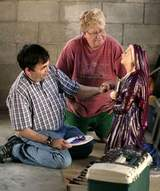
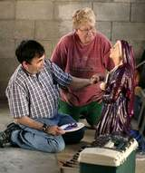

Dwane Beckhart painted a statue of St. Bernadette
as Gail Linville of the St. Joseph Neighborhood Association
observed. (By Pam Spaulding, The Courier-Journal)

502.637.3159
Statue of Bernadette to
be blessed May 6
By Glenn Rutherford
Record Assistant Editor
A 5-foot-tall statue of the Virgin Mary was installed last year in the Grotto and Garden of Our Lady of Lourdes, off President's Boulevard next to University Park Apartments, on the grounds of the former St. Joseph Infirmary. A statue of St. Bernadette will be added to the left side next month. (Photos by Pam Spaulding, The Courier-Journal)
Dwane Beckhart painted a statue of St. Bernadette
as Gail Linville of the St. Joseph Neighborhood Association
observed. (By Pam Spaulding, The Courier-Journal)

A Grotto and Garden of Our Lady of Lourdes will
receive image of girl who said she saw the Virgin Mary at Lourdes,
France
On May 6, the Sunday after Derby Day, the Grotto Grannies and
Grandpas, along with members of Our Mother of Sorrows Church and the
St. Joseph Neighborhood Association, will hold a procession to the
Grotto and Garden of Our Lady of Lourdes, which rests on the grounds
that once held the old St. Joseph Infirmary.
Once they reach the grotto, its newest statue � of Bernadette, the
14-year-old girl who claimed to have seen the Virgin Mary on 18
different occasions in Lourdes, France � will be blessed by Father
William Martin, pastor at Our Mother of Sorrows.
The statue of Bernadette was found a few weeks ago at a Dixie
Highway concrete figures retail outlet. Gayle Linville, president of
the neighborhood association, had been looking for a likeness of
Bernadette for quite a while.
�I�d stop anytime I was out driving and saw a place that sold
statues and figures,� she explained recently. �One day I was driving
to a friend�s house out on Dixie, and I saw concrete statues at the
corner of Dixie and Greenwood Road and sure enough, there she was.�
The concrete likeness of Bernadette �looked like she�d been there
quite a while,� Linville said. But with the help of Joseph Schnurr
and his workers � the same people who placed the five-foot statue of
the Virgin Mary in the grotto last year � Bernadette was
pressure-washed.
Then artist Dwane Beckhart, who restored and re-painted the grotto�s
Stations of the Cross, painted the statue of Bernadette, who is
shown kneeling and holding a candle, the 17th apparition in the
series, according to Grotto Granny Ruth Gerlach.
�I looked in the Our Lady of Lourdes prayer book,� she explained,
�and it said the apparition with the candle was the 17th.�
It was during that 17th visit from the Virgin Mary that Bernadette
is said to have held her hand over a burning candle for 15 minutes
without receiving any burns.
Finding the statue was a God-send, Linville said. And finding some
help for the Grotto Grannies and Grandpas would be a God-send, too,
said Gerlach.
�We are all getting pretty well on in age,� she noted, �and we�re
all pitching in and helping keep the grotto up as much as we can.
But we can�t do as much work as we once did and we could use some
help.�
What Ruth Gerlach and the other Grotto Grannies and Grandpas are
hoping for are some younger couples willing to assume the legacy of
the work the original group began in late 1999. That�s when about 20
grannies and grandpas began restoring the Grotto of Our Lady of
Lourdes, which had lain dormant and deteriorating for more than 20
years.
The grotto was built in 1927 as a place where patients, medical
staff and sisters who served at St. Joseph Infirmary could find
comfort and solace. The volunteers who�ve worked the past eight
years have once again made the grotto what it was meant to be � a
beautiful, quiet place for prayer and reflection.
�But we just can�t keep taking care of it forever,� Gerlach noted.
�I�m old � I�m 79 � but I�m not as old as some of the others. Helen
Spalding will be 90, and she was there the other day working in the
rain with everybody else. We have others in their eighties. ...
We�re just getting older, and we can�t do as much as we once did.�
New volunteers �don�t have to be terribly young,� she said.
�Middle-aged couples would be fine. We have a wonderful couple,
Barbara and Kenny Bruce, who are a bit younger than we are and
they�ve been so much help. We just need a few more couples like
them.�
Those interested in helping the Grotto Grannies and Grandpas can
call Gail Linville, the St. Joseph Neighborhood Association
president, at 637-3159, or Ruth Gerlach at 637-6108